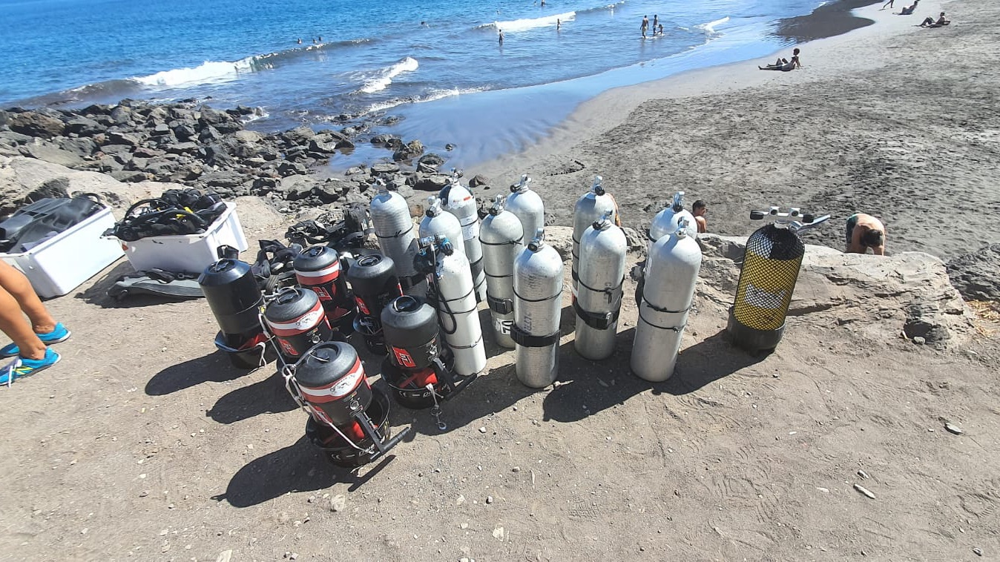
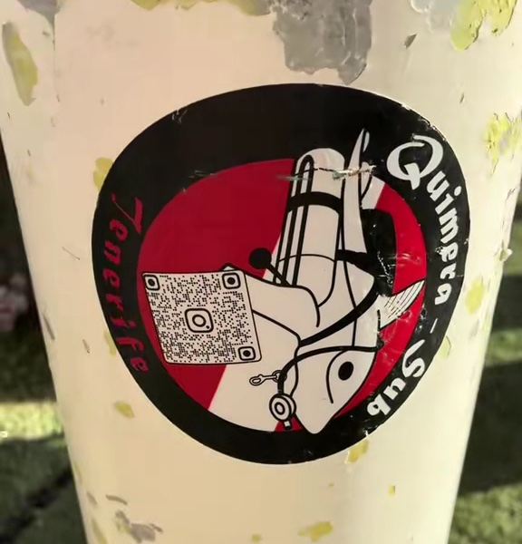

Inmersión con el club · foto de su ficha de Google
3alumnos máx. por grupo
SDI·TDIdel bautizo a instructor
ES·ENidiomas
40 m+de fondo cerca de la costa
01 Cursos e inmersiones
Del primer bautizo al buceo técnico
Formación acreditada por SDI/TDI. Los precios «desde» son los que publica el club; para el resto, te respondemos al momento por WhatsApp.
Registro · 01
Bautizo de buceo
Tu primera vez bajo el agua. Explicación en tierra y una inmersión tranquila en la bahía de Radazul, siempre con el instructor a tu lado. Te llevas el vídeo.
Tu titulación para bucear en cualquier parte del mundo. Teoría con eLearning SDI, aguas confinadas y cuatro inmersiones en mar abierto. Repetimos lo que haga falta.
Precios de referencia publicados por el club en junio de 2026. Confírmalos por WhatsApp.
02 Radazul en metros
El fondo empieza a dos aletadas
En la costa este de Tenerife la profundidad llega enseguida: hay sitio para quien baja por primera vez y para quien hace buceo técnico, sin alejarse del puerto.
0 mSalida desde el puerto deportivo y entrada desde la costa.
6 mProfundidad máxima del bautizo.
12 mZonas para principiantes.
20 mProfundidad máxima del curso Open Water.
10–30 mEl Emisario de Radazul: peces trompeta, bancos de bogas, rayas y barracudas.
40 m+Paredes volcánicas a poca distancia de la playa: terreno de buceo técnico.

Botellas listas en la orilla · foto de la ficha del club
15–40 mvisibilidad
20–24 °Cagua, de invierno a verano
Fauna habitual
Pejeverdes, fulas, sargos, salemas, morenas, pulpos y sepias. A veces barracudas, rayas, medregales y alguna tortuga (no garantizada).
Fuentes: radazul.org y ficha PADI de Radazul.
03 Reserva directa
Hablas con quien baja contigo
Trato directo con tu instructor
Le cuentas tu nivel, tus dudas o tus nervios a quien va a estar a tu lado bajo el agua.
Respuesta rápida por WhatsApp
Fecha, hora y punto de encuentro en un par de mensajes, sin formularios.
Si el mar no acompaña, cambiamos la fecha
El club decide cada día si se bucea y dónde. Si no es seguro, te proponemos otro día.
04 Reseñas
Lo que cuentan al salir del agua
4,9
★★★★★53 reseñas en Google
Google4,9 / 5 · 53 reseñas
Yumping9,6 / 10 · 5 opiniones
★★★★★Miguel no solo enseña a bucear, transmite confianza, seguridad y un respeto enorme por el mar. Tiene una paciencia infinita y hace que cada inmersión sea una oportunidad para aprender y disfrutar.
★★★★★Acabo de obtener mi certificado Open Water con Juan y Miguel […] Su profesionalidad, su simpatía y su pasión por el buceo realmente marcaron la diferencia.
★★★★★Al inicio, yo tenía cierto miedo, ya que nunca había practicado buceo. […] Sin embargo, Miguel estuvo atento en todo momento, transmitiéndonos la confianza necesaria para avanzar con seguridad.
★★★★★Tras bucear un solo día con el ya estábamos repitiendo al día siguiente […] de esos escasos centros de buceo donde sales sonriendo del agua planeando la siguiente salida.
★★★★★Gran equipo muy buena formación además del equipo que se utiliza en prácticas y inmersiones muy seguro todo
★★★★★Miguel nos trató genial. Estuvimos muy cómodos haciendo el curso y ya tenemos planes de hacer el siguiente.
★★★★★Los chicos estuvieron pendientes de nosotros y de nuestra comodidad y seguridad constantemente.
★★★★★¡Todo genial! […] Muy atentos, y amables, además de que nos aconsejaron en todo momento.
05 Cómo funciona
Escríbenos
Cuéntanos qué quieres hacer, cuántos sois y qué día os viene bien.
Confirmamos
Te damos hora y punto de encuentro en el puerto de Radazul.
Al agua
Llegas, te equipamos y bajamos juntos.
06 El club
Un club pequeño, a propósito
«Club de buceo familiar y cercano, muy concienciado con la formación y el cuidado del entorno.»Así se presenta el club en su ficha de Google
Al frente está Miguel Ángel Garrido, instructor y responsable del club. En las reseñas también aparecen Juan y Jony, que bajan con los alumnos.
Los cursos se dan en grupos de tres alumnos como máximo y sin grupos mínimos: se avanza al ritmo de cada uno y las prácticas se repiten hasta que estés preparado.

La insignia del club: la bandera de buceador
07 Preguntas frecuentes
¿Necesito experiencia para el bautizo?
No. El bautizo es para quien nunca ha buceado: primero la explicación en tierra y después una inmersión de 30 a 45 minutos a 6 metros como máximo.
¿Qué tengo que llevar?
El equipo de buceo lo pone el club. Trae bañador y toalla; hay vestuarios con duchas. Te lo confirmamos todo por WhatsApp.
¿Y si hace mal tiempo?
El club decide cada día si se puede bucear y en qué punto, según el viento, el oleaje y la visibilidad. Si no es seguro, buscamos otra fecha.
¿Pueden venir niños?
Depende de la edad y de la actividad. Escríbenos y te decimos qué opciones hay.
¿Puedo volar después de bucear?
No conviene volar ni subir a altura hasta pasadas 24 horas desde la última inmersión. Tenlo en cuenta si te vas de la isla o subes al Teide.
¿Cómo se paga?
Te lo explicamos al confirmar la reserva por WhatsApp.
08 Horario y cómo llegar
Lunes
Cerrado
Martes a viernes
16:00–19:00
Sábado y domingo
9:30–15:00
Horario del local según Google. Las salidas se cuadran contigo: festivos y otras horas, consúltanos.
Puerto Deportivo de Radazul, local 2, junto a las oficinas del puerto · Av. Colón · 38109 Radazul (El Rosario), Tenerife